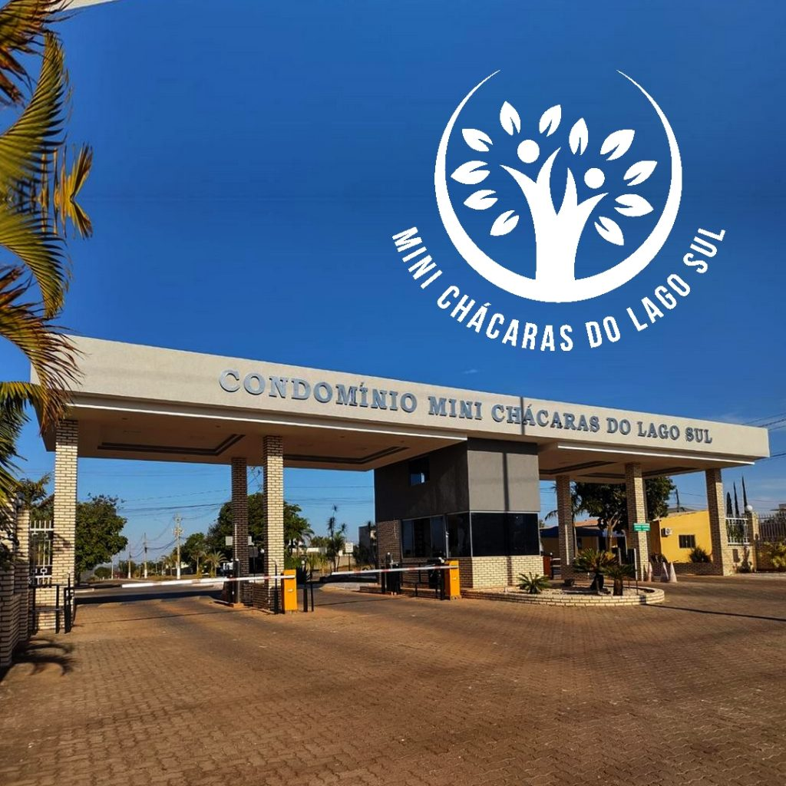

Portal oficial
Um lugar para viver, conviver e construir histórias.
Portal oficial do Condomínio Mini Chácaras do Lago Sul — informação, comunicação e serviços para nossos moradores.
Saiba maisComunicado importante • Abastecimento de água
Atenção, moradores
O condomínio está enfrentando instabilidade no abastecimento de água. A Administração está ciente da situação e está acompanhando as ocorrências relacionadas ao fornecimento. Para informações, esclarecimentos ou dúvidas sobre o abastecimento, os moradores devem entrar em contato diretamente com a Administração do Condomínio pelo número oficial. Pedimos a colaboração de todos para que as solicitações relacionadas à água sejam direcionadas à Administração, evitando o acúmulo de atendimentos na portaria. Agradecemos a compreensão e a colaboração de todos.
Atualizado em 24 de agosto de 2026O condomínio
Um condomínio com história, natureza e comunidade.
Localizado no Jardim Botânico, no coração de Brasília, o Mini Chácaras do Lago Sul é um ambiente residencial familiar e acolhedor, com convivência comunitária, áreas verdes, segurança 24 horas e área comercial no Altiplano Leste.
Conheça a históriaFotografia real da portaria publicada no site oficial atual.
Dados institucionais confirmados
O Mini Chácaras em números.
Estrutura
Segurança, natureza, convivência e serviços.
Segurança
Controle e segurança 24 horas, conforme conteúdo institucional oficial.
Natureza
Áreas verdes e tranquilidade no contexto do Jardim Botânico.
Convivência
Comunidade residencial com ambiente familiar e acolhedor.
Área comercial
Serviços e conveniências no coração do Altiplano Leste.
Localização
Jardim Botânico, Brasília/DF, com acesso pela Ponte JK.
Comunicado aos moradores
Instabilidade no abastecimento de água
O condomínio está enfrentando instabilidade no abastecimento de água, incluindo situações de baixa pressão e dificuldade de chegada da água às caixas d’água de algumas residências.
A Administração está ciente da situação e está acompanhando as ocorrências relacionadas ao fornecimento. Neste momento, as informações sobre o abastecimento estão sendo centralizadas pela Administração do Condomínio.
- Ocorrências relacionadas à falta de água
- Baixa pressão no abastecimento
- Dificuldade de chegada da água às caixas
- Acompanhamento das ocorrências pela Administração
Comunicado atual
Administração acompanhando a situação
Para informações, esclarecimentos ou dúvidas sobre o abastecimento, os moradores devem entrar em contato diretamente com a Administração do Condomínio pelo número oficial.
- Orientação aos moradores
- Direcione solicitações relacionadas à água diretamente à Administração.
- Atendimento
- Utilize o número oficial da Administração do Condomínio.
- Atualização
- 24 de agosto de 2026
Nossa história
Da antiga Fazenda Gama à comunidade atual.
- Terras da antiga Fazenda Gama formam parte da origem da região.
- Fundação oficial do Lago Sul.
- Ocupação do Jardim Botânico por condomínios horizontais.
- Fundação oficial do Condomínio Mini Chácaras do Lago Sul.
- Inauguração da Ponte JK melhora a acessibilidade da região.
- Comunidade consolidada, com residências, área comercial e vida comunitária.
Localização e contato
Jardim Botânico, Brasília/DF.
Endereço: Jardim Botânico, Brasília/DF.
Jardim Botânico, Brasília/DF
Quadras 04 à 11